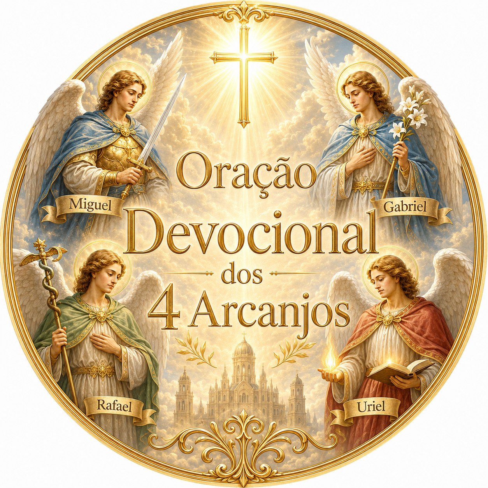

Receba a Oração Devocional dos 4 Arcanjos
Uma experiência de fé, proteção e fortalecimento espiritual com Miguel, Gabriel, Rafael e Uriel.

Um chamado para fortalecer sua fé
Existem momentos em que a alma precisa de direção, paz e amparo espiritual. A Oração Devocional dos 4 Arcanjos foi preparada para quem deseja se aproximar de Deus através de uma prática de oração profunda, respeitosa e cheia de fé.
Esta devoção reúne a força simbólica dos quatro arcanjos: Miguel, Gabriel, Rafael e Uriel, em uma jornada de oração para proteção, clareza, cura interior e luz espiritual.
O que você vai receber
- Uma oração devocional especial aos 4 Arcanjos.
- Uma prática simples para fazer em momentos de aflição, dúvida ou busca por proteção.
- Reflexões espirituais para fortalecer sua confiança em Deus.
- Um conteúdo religioso com linguagem clara, respeitosa e devocional.
- Acesso digital para consultar sempre que sentir necessidade.
Por que os 4 Arcanjos?
Na tradição cristã, os arcanjos são lembrados como mensageiros e servos de Deus, associados à proteção, à cura, à luz e à missão espiritual.
- São Miguel: proteção, coragem e defesa espiritual.
- São Gabriel: mensagens divinas, clareza e direção.
- São Rafael: cura, restauração e amparo.
- Uriel: luz, sabedoria e fortalecimento interior.
Uma oração para guardar com você
“Que a luz de Deus conduza seus passos, fortaleça seu coração e proteja sua caminhada.”
Você poderá usar esta oração em momentos de silêncio, antes de dormir, ao acordar, em períodos de dificuldade ou sempre que desejar renovar sua fé.
Esta oferta apareceu por um motivo
Você acabou de dar um passo importante em sua jornada espiritual. Por isso, esta página foi liberada como uma oportunidade especial para complementar sua devoção.
Adicione agora a Oração Devocional dos 4 Arcanjos ao seu pedido por apenas R$127.
Conteúdo devocional e respeitoso
Esta é uma experiência de oração voltada à fé, à paz interior e ao fortalecimento espiritual. Não se trata de promessa milagrosa, ritual ou prática esotérica, mas de um conteúdo devocional para ajudar você a rezar com mais constância e confiança.